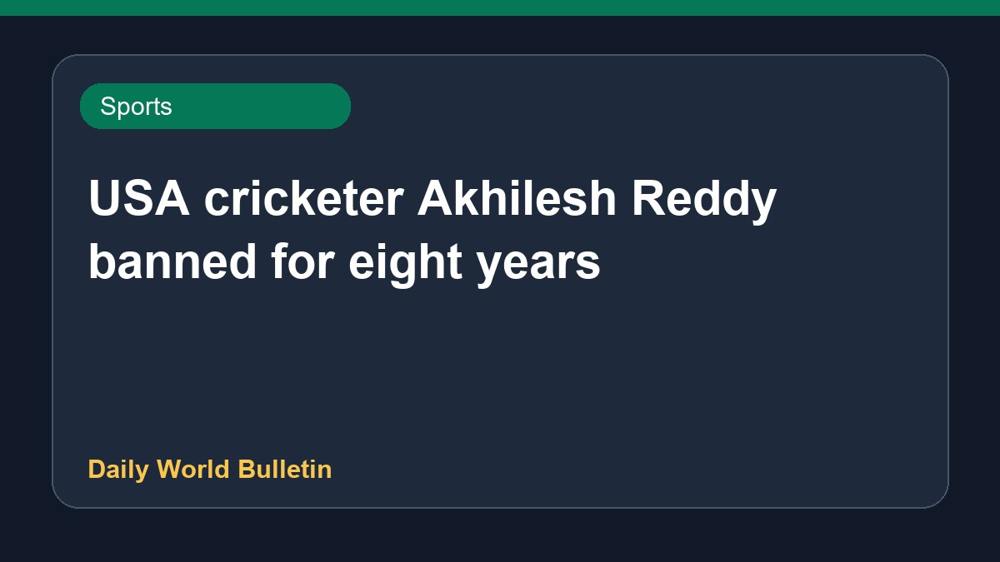

USA cricketer Akhilesh Reddy banned for eight years

United States cricket player Akhilesh Reddy has been handed an eight-year ban following violations of the anti-corruption code. According to reports, the penalty is related to match-fixing activities. Multiple sports news sources confirmed that the player received the lengthy suspension under the relevant Anti-Corruption Code provisions.
Original source: Sports News Sources
Akhilesh Reddy receives eight-year ban for breach of anti-corruption code - Cricbuzz ↗
Akhilesh Reddy receives eight-year ban for breach of anti-corruption code - Cricbuzz ↗